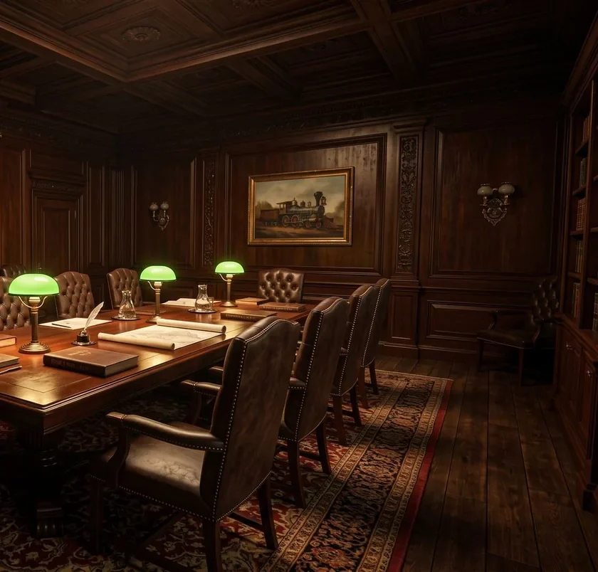
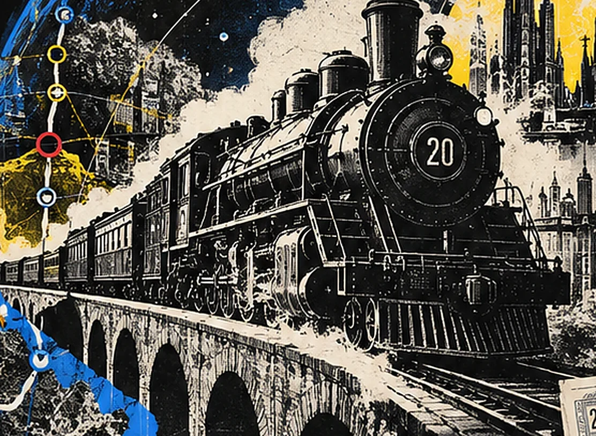
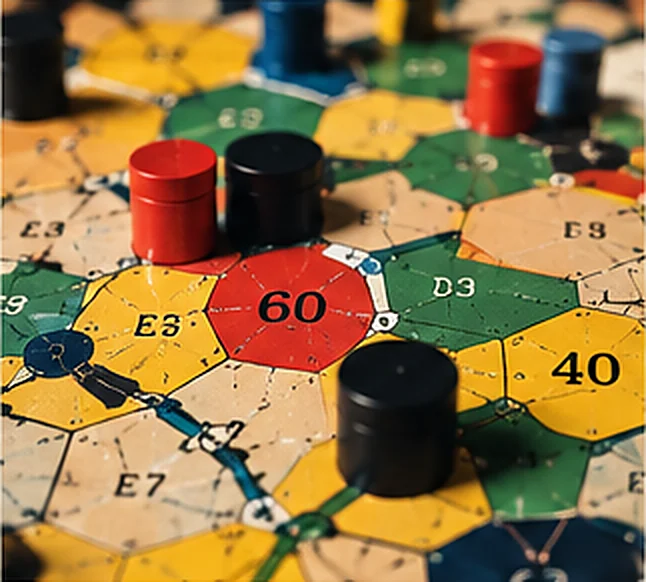

Project18XX — view the project
Railroads, a stock market and the people who run both: an 18xx game being built for play on Juno, at three tables.
View project
PlayIn development · not yet on play.netadao.org

The waiting roomLudum · Games by Neta DAO
Ludum is Neta DAO’s game publisher. It makes strategy games about capital, infrastructure and coordination, builds them in public, and runs them on play.netadao.org.
Railroads, a stock market and the people who run both: an 18xx game being built for play on Juno, at three tables.
PlayIn development · not yet on play.netadao.org

The waiting roomBlockchain networks drawn as railway infrastructure: an 18xx game loosely based on the Cosmos ecosystem.
PlayIn development · not yet on play.netadao.org

Networks are territoriesNothing is playable yet. Both games are in development, and each opens on play.netadao.org first; this list changes the day one does.

The railway-and-stock game Ludum starts with, and why a market of shared companies is the right place to begin.
How one rule turns a railway game into a lesson in capital that wears out.
Zones, routes and stations: the visual grammar of 20 Cosmos, before the rules.
Statuses on Ludum are promises. A note on keeping them.
A good game is a model you can enter.
Some systems are easier to play than to explain. A market where everyone owns a piece of everyone else; a network worth only what it connects; a rule that turns yesterday’s investment into scrap.
Read about them and you understand them. Sit at a table and run them, and you feel them. That is what Ludum publishes.
Read why